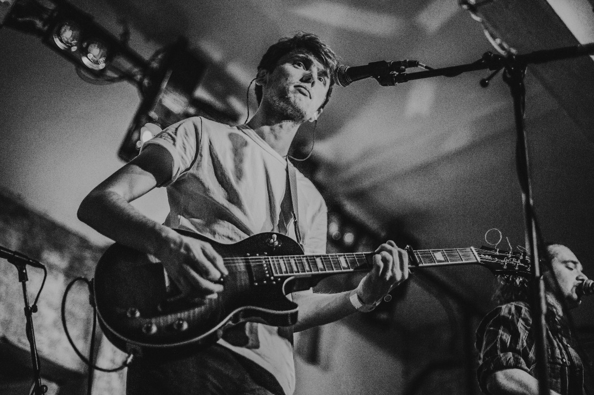
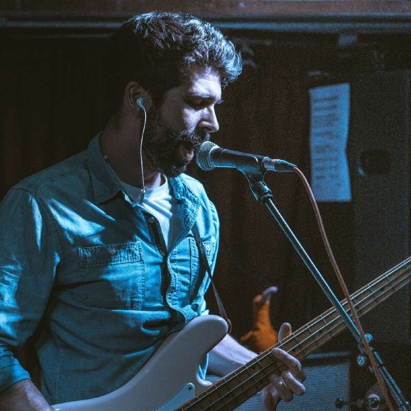

With fierce, intricate rhythms, mosaic and dazzling guitars, bittersweet abstract lyricism and an influence ranging from Queens of The Stone Age, FOALS and Tame Impala all the way to Massive Attack and Talking Heads, Quiet Tongues come with a unique approach to Alt Rock that stirs the primal in us all.
Formed in 2018 under the name Modra Luna, the quartet spent the coming years circuiting the London music scene, playing venues such as Oslo Hackney, The Finsbury, Notting Hill Arts Club and Nambucca. The band took the chance presented by the enforced break in 2020 to set a new direction and rebrand.
Returning as Quiet Tongues, they are set to release their debut single Ennui in June 2022, following up with the feet-stomping fan favourite, This Water is Wet, later in the year.
We are an independent band. For bookings, please email quiettongues@gmail.com
{kind=link}
![Full Band [Alt]](img/epk_assets/band_2_epk.jpg){kind=link}
![Seth [Vox & Guitar]](img/epk_assets/seth_epk.jpg){kind=link}
![ Jack [Guitar]](img/epk_assets/jack_epk.jpg){kind=link}
![Dom [Drums]](img/epk_assets/dom_epk.jpg){kind=link}
![ Dan [Bass]](img/epk_assets/dan_epk.jpg){kind=link}
{kind=link}
{kind=link}
{kind=link}